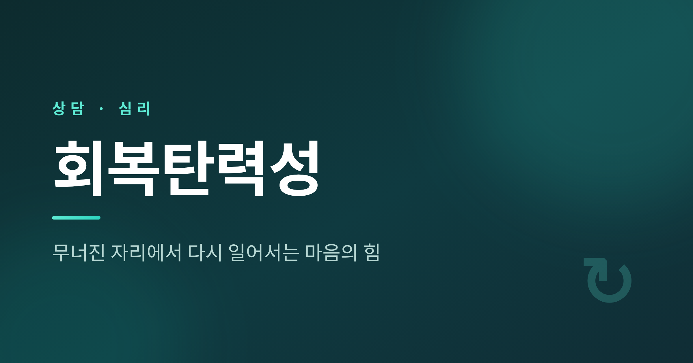
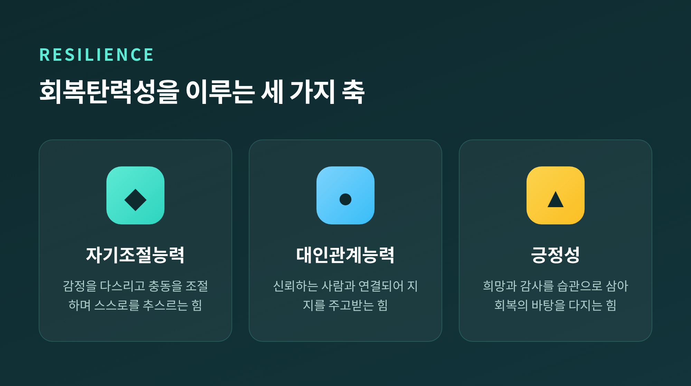
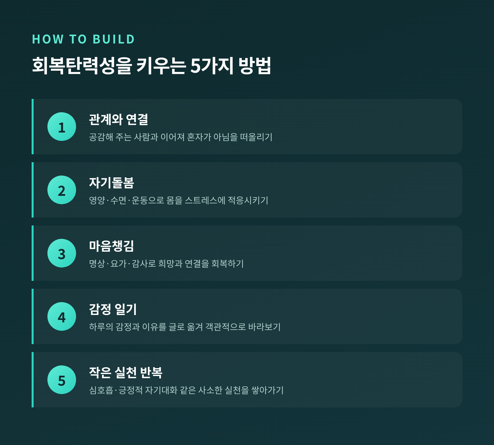
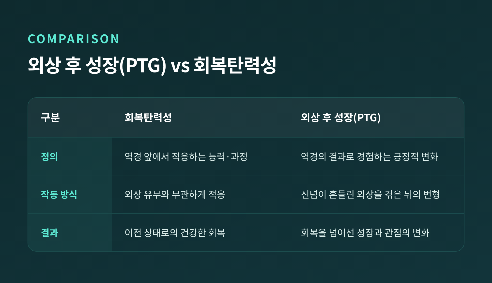

**핵심 요약 (3줄)** - 회복탄력성은 타고난 성격이 아니라, 누구나 배우고 키울 수 있는 마음의 적응 과정입니다. - 자기조절·관계·긍정성, 이 세 가지 축을 일상의 작은 실천으로 다지는 것이 핵심입니다. - 다시 튀어 오르는 것이 아니라, 힘든 경험을 삶에 통합하는 것이 진짜 회복탄력성입니다.
오늘은 회복탄력성에 대해 이야기해 보려 합니다. 무너진 자리에서 다시 일어서는 마음의 힘이 무엇인지, 그리고 그것을 어떻게 키우는지 정리하겠습니다. 일반적인 심리 정보를 바탕으로 차분히 살펴보겠습니다.
회복탄력성(psychological resilience)은 심각한 스트레스나 역경, 외상에 직면했을 때 그것에 압도되지 않고 다시 건강한 상태로 적응해 가는 과정입니다. 미국심리학회(APA)는 이를 "역경, 외상, 비극, 위협, 또는 중대한 스트레스원에 직면해 잘 적응해 나가는 과정"으로 정의합니다. 흔히 "어려운 경험에서 다시 일어서는 것"으로 표현되기도 합니다.
여기서 중요한 점이 하나 있습니다. 회복탄력성은 누군가는 가지고 누군가는 못 가진 고정된 특성이 아닙니다. 누구나 배우고 개발할 수 있는 행동과 사고, 행위를 포함합니다.
발달심리학자 Ann Masten은 이를 "평범한 마법(Ordinary Magic)"이라 불렀습니다. 회복탄력성을 만들어내는 보호 시스템이 특별하거나 비범한 것이 아니라, 평범하고 흔한 것이라는 뜻입니다. 좋은 보살핌, 정상적으로 기능하는 두뇌처럼 우리가 이미 가진 기본 시스템들이 시너지를 이루며 작동합니다.

회복탄력성의 구성 요소는 자료마다 분류가 조금씩 다릅니다. APA는 연결, 웰니스, 건강한 사고, 의미라는 4가지 축을 제시합니다. 연세대 김주환 교수의 한국형 모델(KRQ-53)은 자기조절능력, 대인관계능력, 긍정성이라는 세 요인으로 묶습니다.
분류는 달라도 큰 틀은 한곳으로 모입니다. 자기조절, 관계(연결), 긍정성이라는 공통 축으로 수렴하는 셈입니다.
특히 김주환 교수의 모델에서 눈여겨볼 부분이 있습니다. 자기조절능력과 대인관계능력을 길러주는 바탕이 바로 긍정적 정서라는 점입니다. 긍정적 정서가 습관이 된 사람은 행복의 기본 수준도 높고 회복탄력성도 높다고 합니다.
일반적인 심리 정보에서도 감정 조절 능력, 자기 효능감, 사회적 지지를 핵심 3요소로 꼽습니다. 표현은 달라도 결국 같은 곳을 가리키고 있습니다.

회복탄력성은 후천적으로 키울 수 있습니다. 다만 단기간에 끝나는 훈련이 아니라, 일상 속 작은 실천을 반복하며 천천히 다져가는 장기적 과정입니다. APA와 여러 심리 정보 소스가 공통으로 권하는 방법을 정리하면 다음과 같습니다.
1. **관계와 연결을 우선시하기** — 공감하고 이해해 주는 사람과 연결되면, 어려움 속에서도 혼자가 아님을 떠올릴 수 있습니다. 신뢰할 만하고 따뜻한 사람을 곁에 두는 것이 회복탄력성의 토대가 됩니다.
2. **자기돌봄과 웰니스** — 적절한 영양, 충분한 수면, 규칙적 운동 같은 생활 습관이 몸을 스트레스에 적응시키고 감정의 부담을 덜어 줍니다. 자기돌봄은 정당한 실천입니다.
3. **마음챙김 실천** — 저널링, 요가, 명상 같은 실천이 연결을 만들고 희망을 회복하는 데 도움이 됩니다. 삶의 긍정적 측면과 감사한 것을 떠올려 보시면 좋겠습니다.
4. **감정 일기 쓰기** — 하루 동안의 감정과 그 이유를 기록해 봅니다. 감정을 글로 옮기는 것만으로도 그 흐름을 객관적으로 바라보는 훈련이 됩니다.
5. **작은 실천 반복하기** — 6초 심호흡, 긍정적 자기대화, 감사일기, 실패를 다시 해석하기, 도움을 요청하는 연습. 사소해 보이는 실천이 쌓여 심리적 유연성을 만듭니다.
외상 후 성장(PTG, Post-Traumatic Growth)이라는 개념도 함께 짚어 보겠습니다. PTG는 위기 사건을 겪은 후에 나타나는 긍정적 심리 변화를 말합니다. 단순한 회복을 넘어, 그 경험을 통한 긍정적 변형을 가리킵니다.
Tedeschi와 Calhoun은 PTG가 다섯 영역에서 일어난다고 보았습니다. 개인적 강인함, 새로운 가능성, 대인관계 개선, 삶에 대한 감사, 영적·실존적 변화입니다. 이 척도(PTGI)는 20개 이상의 언어로 번역되어, PTG가 보편적으로 존재함을 보여 줍니다.
그렇다면 회복탄력성과 PTG는 어떻게 다를까요. 아래 표로 비교해 보겠습니다.

| 구분 | 회복탄력성 | 외상 후 성장(PTG) | |------|-----------|------------------| | 정의 | 역경 앞에서 적응하는 능력·과정 | 역경의 결과로 경험하는 긍정적 변화 | | 작동 방식 | 외상 유무와 무관하게 적응 | 핵심 신념이 흔들릴 외상을 겪은 뒤의 변형 | | 결과 | 이전 상태로의 건강한 회복 | 회복을 넘어선 성장과 관점의 변화 |
예전에는 둘을 비슷한 말로 여기기도 했습니다. 지금은 별개의 심리 구성개념으로 구분하는 것이 일반적입니다. 다만 둘은 공존할 수 있습니다. 외상과의 투쟁 끝에 더 회복탄력적이 되는 것 자체가 PTG의 한 예가 되기도 합니다.
한 가지는 분명히 해 두어야 합니다. 외상을 겪은 모든 사람이 성장을 경험하는 것은 아닙니다.
회복탄력성은 종종 강인함, 즉시 다시 일어서기, 끊임없는 긍정성과 같은 것으로 오해받습니다. 하지만 실제 회복탄력성은 고통과 슬픔을 지우는 것이 아닙니다. 힘든 경험을 계속 나아가는 삶 속으로 통합하는 법을 배우는 것입니다.
"항상 앞으로 나아가고 즉시 회복해야 한다"는 생각은 도움이 되지 않습니다. 때로는 가장 회복탄력적인 행동이 쉬는 것이기도 합니다.
이른바 '독성 긍정'도 경계할 필요가 있습니다. 회복탄력적인 사람은 끊임없이 긍정적이지 않습니다. 감사와 슬픔, 희망과 두려움까지 감정의 전 범위에 공간을 허용합니다. 부정적 감정을 억누르면, 그 감정은 지하로 밀려났다가 나중에 다시 떠오릅니다.
고통과 회복탄력성은 함께 존재할 수 있습니다. 무너진 것에 괴로워하면서, 동시에 관계가 깊어지고 목적의식이 자라기도 합니다.
이 글은 일반적인 심리 정보를 정리한 것입니다. 전문 상담이나 치료를 대체하지 않습니다. 어려움이 오래 이어지거나 일상생활에 지장이 있다면, 정신건강 전문가의 도움을 받으시길 권합니다.
막혀 있을 때 우리에게 필요한 것은, 지지와 다음 단계를 함께 찾아 줄 누군가의 시선일 수 있습니다. 신뢰하는 친구나 가족이든, 전문가든, 연결되어 있는 것 자체가 힘이 됩니다.
정리하면 이렇습니다. 회복탄력성은 타고나는 재능이 아니라, 매일 조금씩 다져 가는 마음의 근력입니다.
다시 일어선다는 것은 고통을 지우는 것이 아니라, 그것을 안고 계속 걸어가는 것입니다.
지금 무너진 자리에 서 계신다면, 그 자리에서 다시 시작할 수 있을지 묻고 싶습니다. 답은, 천천히 키워 갈 수 있다는 쪽이라고 생각합니다.